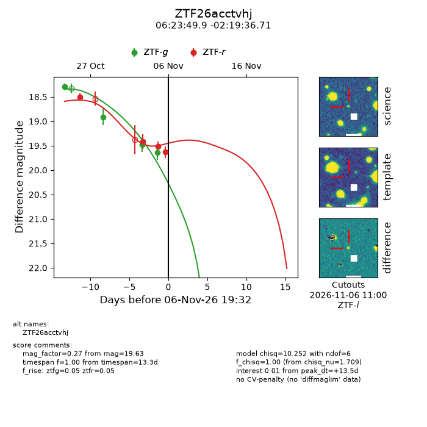
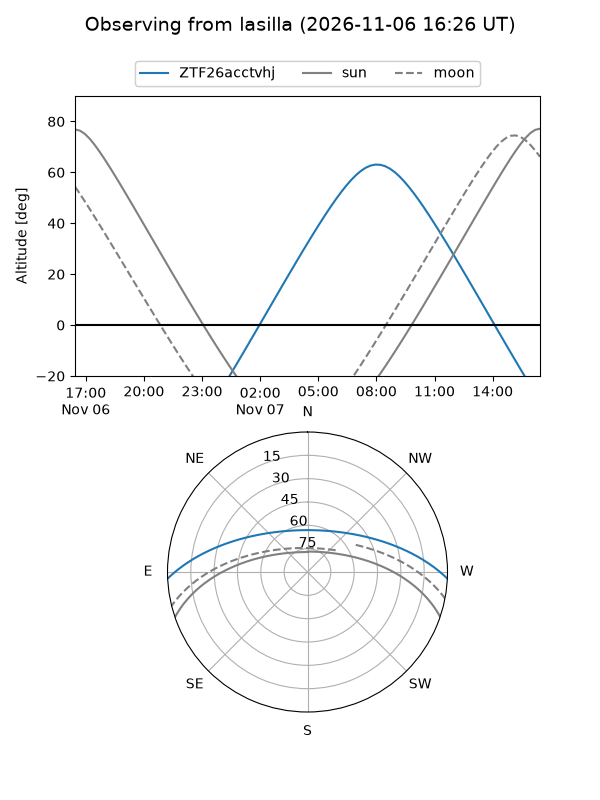
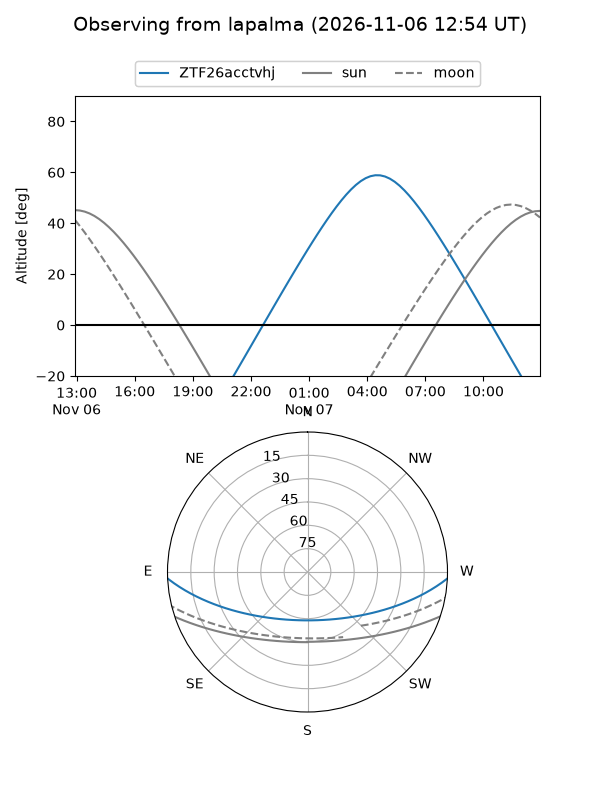
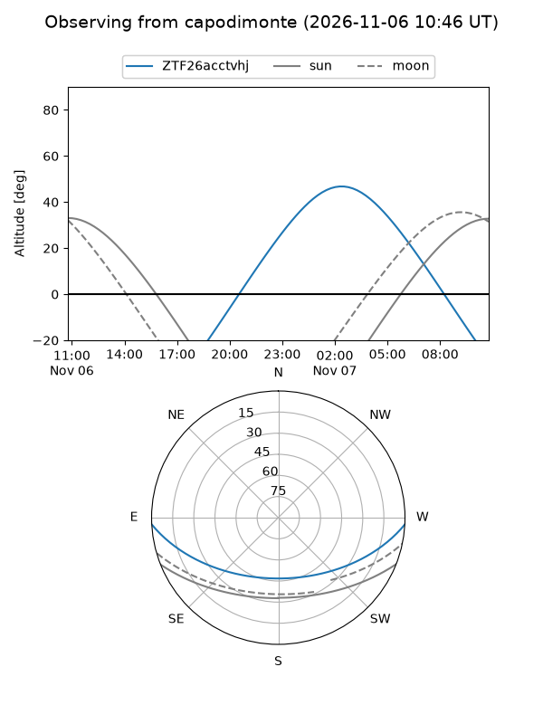
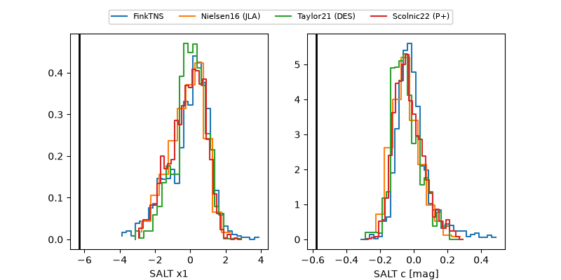

ZTF26acctvhj
Target ZTF26acctvhj at 2026-11-06 19:34
Aliases and brokers:
FINK-ZTF: ztf.fink-portal.org/ZTF26acctvhj
Lasair-ZTF: lasair-ztf.lsst.ac.uk/objects/ZTF26acctvhj
ALeRCE-ZTF: alerce.online/object/ZTF26acctvhj
Direct TNS query: direct search
alt names
ZTF26acctvhj (ztf,fink_ztf)
Coordinates:
equatorial (ra, dec) = 95.9578,-2.32686
equatorial (HMS+DMS) = 06:23:49.88,-02:19:36.71
galactic (l, b) = (211.8568,-7.20215)
Flags:
peak dt: +13.5
Photometry:
last ztfg=19.64, ztfr=19.63
4 ztfg, 4 ztfr detections
Lightcurve

Visibility



Additional plots
